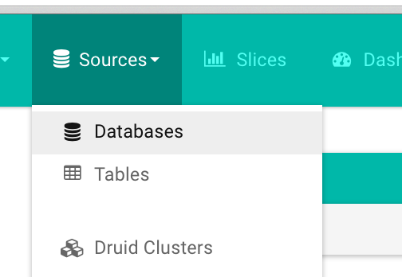
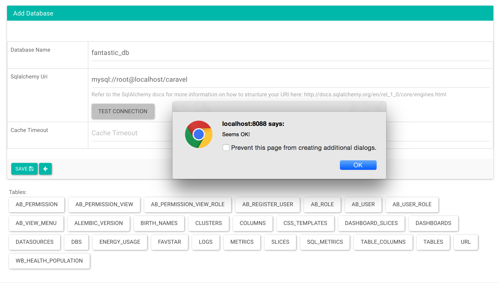
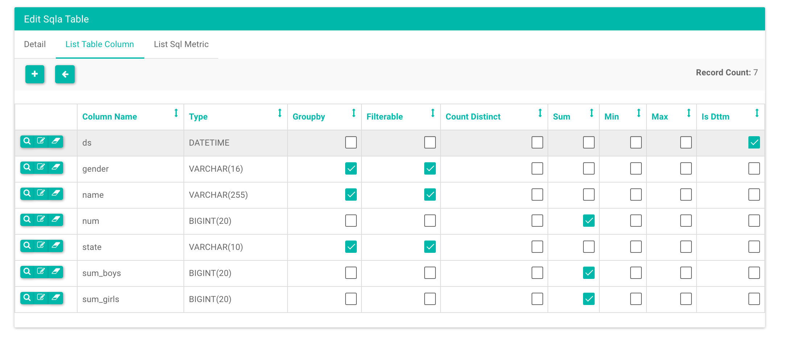

This basic linear tutorial will take you through connecting to a database, adding a table, creating a slice and a dashboard. First you’ll need to tell Caravel where to find the database you want to query. First go to the database menu
Now click on the + button to add a new entry
Fill in an arbitrary reference name for the database, and you SQLAlchemy URI. To figure out how to construct your URI, check out the SQLAlchemy documentation. Then you can test your connection. If it works, you’ll see a positive popup and list of the tables that SQLAlchemy has found for that URI.
Once your database has been added, it’s time to add your table. Navigate
using the navigation bar at the top to Sources -> Tables and click the
plus (+) sign there (similar to the one ).
Now enter the name of the table in the Table Name textbox, and select
the database you just created in the Database dropdown, hit save. At this
moment, Caravel fetched the column names, their data types and tries to guess
which fields are metrics in dimensions. From the list view, edit the table
that you just created by clicking the tiny pen icon.
Now you’re in the table editor, click on the “List Table Column” tab, showing you the list of columns in your table as well as their data types.
Click the checkboxes here that inform Caravel how your columns should be
shown in the explore view, and which metrics should be created. Make sure
to inform Caravel about your date columns. You could also create
“SQL expression” columns here, or metrics in that tab as aggregate expressions,
but let’s not do that just yet. Hit save.
You should now be back in the Table List view. Click on the name of the
table you just created. You enter the “Explore” view for your table.
The next step is to create a Slice. First, make sure to use a time filter that is relevant.
Note
You can use some “natural language time expressions”
either as relative (as in now, 4 weeks ago, or 1 year ago) as well
as hard date or time expressions (as in 3015, 3016-01-01 or
May).
Alter the form’s option and click Query until you get to an interesting
cut of data, and click SAVE AS, enter a name, and you just created your first
slice.
This slice is now accessible in the slice list from the
Menu -> Slices at any time. Note that this view is easily filterable and
searchable.
Now let’s create a dashboard. A dashboard is simply a collection of slices
with metadata around their sizes, positions, CSS style and a few other things.
Navigate to the dashboard list view Menu -> Dashboard and click the plus
(+) sign. In the form, enter a name and pick the slice you just created.
Hit Save, you should be back in Menu -> Dashboard. Now enter your
new dashboard.
Here you are. You can now resize and move the different slice(s), style them
in the CSS modal window, and save right from here. For now, renaming the
dashboard or adding on a new slice is done through the dashboard edit view,
which is the same form as you used when you originally created the dashboard,
and is accessible by clicking the edit pen icon from the dashboard list
view (Menu -> Dashboards)
{kind=link}
{kind=link}
{kind=link}
{kind=link}
{kind=link}
{kind=link}
{kind=link}
{kind=link}
{kind=link}
{kind=link}